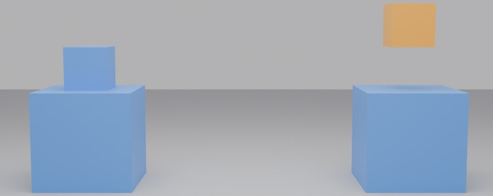

Bonus lesson
Separate and Join
Sometimes one object holds parts you want to treat on their own, and sometimes several objects should become one. Separate cuts parts of a mesh away into new objects. Join merges objects back into one. They are opposites, and they work in different modes.

1. Separate (Edit Mode)
In Edit Mode, select the vertices or faces you want to cut away, then press P (or use Mesh ‣ Separate). The manual lists three ways to separate:
- Selection: separates the selected elements into a new object.
- By Material: separates fragments based on the materials assigned to the faces.
- By Loose Parts: creates one object for every independent (disconnected) fragment of the original mesh.
2. Join (Object Mode)
In Object Mode, select the objects, make the one you want to keep the active object (the last one you select), then press Ctrl+J or use Object ‣ Join. The manual says Join merges all selected objects into the last selected active object, and all objects must be the same type: mesh, curve, surface or armature.
The manual also notes what happens to the data. Materials, vertex groups, UV and vertex layers are merged. Modifiers, constraints, groups and parent relationships are ignored when joining and will not be applied to the active object. So if your objects use modifiers, apply them before you join if you want to keep their effect.
Read the manual pages on Separate and Join.
Exercise
Add a cube. In Edit Mode, add a loop cut, select the top face, press P and choose Selection. Press Tab to go back to Object Mode: you now have two objects, and you can move the new one away with G. Then select both, making the cube you want to keep the active one, and press Ctrl+J to put them back into one object.